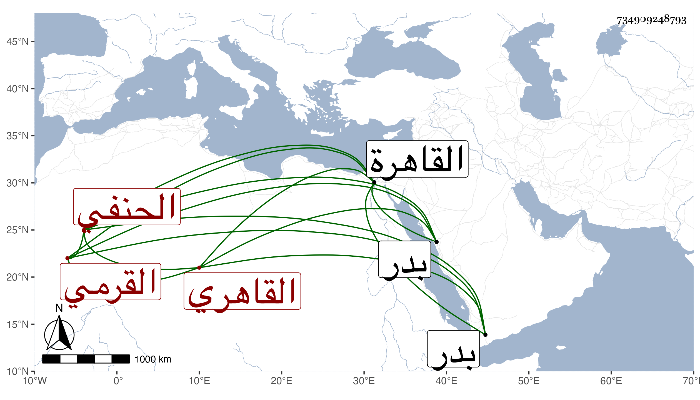

0902Sakhawi.DawLamic.ITO20230111-ara1.EIS1600.734909248793
Biography ID: 734909248793
570
محمود بن عمر بن منصور أفضل الدين أبو الفضل بن السراج القرمي الأصل القاهري الحنفي ويعرف بلقبه . نشأ بالقاهرة فحفظ القرآن وكتبا واشتغل في الفقه على قارئ الهداية والنظام السيرامي والتفهني وغيرهم وقرأ على البساطي في المعاني والبيان وغيرها وكذا لازم العز بن جماعة ثم العلاء البخاري وكان عنده حين مجيء البرهان الأدكاوي إليه وإجلاله الزائد له بحيث اقتضى سؤال بعضهم له في تقرير درسهم ففعل في حكاية طويلة ، بل قرأ على شيخنا في شرح ألفية العراقي ورافقه فيه الشمني وغيره وسمع على الولي العراقي والواسطي وبرع واقرأ بعض الطلبة وناب في القضاء وصار ذا خبرة بالأحكام فقصد بها ورغب في الدراهم ودام فيه زيادة على ثلاثين سنة واختص بالبدر العيني بحيث قرره خطيب مدرسته ومع ذلك فناب في الحسبة عن يار على الخراساني المستقر عوض مخدومه ولم يلبث أن أعيد البدر غليها فلم يستنبه قصاصا وانتقاما ، وقد حج غير مرة وجاور بأخرة وأخذ عنه هناك بعض الطلبة . ورجع وهو فيما بلغني مقلع عن القضاء فمات في رجوعه في ليلة الثلاثاء سابع عشرة ذي الحجة سنة خمس وستين بالقاع الكبير وحمل إلى بدر فدفن بها وهو في عشر السبعين ، وكنت ممن اجتمع به غير مرة وسمعت من فوائده بل عرضت عليه في الصغر بعض المحافيظ وكان ذا فضل ومشاركة مع أدب وحشمة ، وله ذكر في سنة ست وأربعين من أنباء شيخنا رحمه الله وإيانا .
